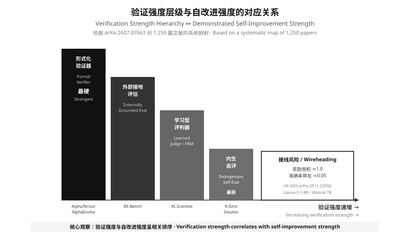

三个互不交流的共同体 · 学习理论的容量边界 · 验证器强度层级 · 三条范式作为档案策略
Three non-communicating communities, the capacity bound from learning theory, the verifier strength hierarchy, and three paradigms as archive strategies
第 0 章定义了是什么。本章回答谁在研究、为什么研究结果互相看不懂。结论是：碎片化不是因为问题复杂，而是因为三个学术共同体各自把搜索三元组的一个维度推到了最强，却没有对方的维度。本章最后给出统一坐标，使后续各章可以横向比较。
Chapter 0 defined what RSI is. This chapter answers who studies it and why the results are mutually unintelligible. The conclusion: fragmentation is not caused by problem complexity but by three academic communities each maximizing one dimension of the search triplet while lacking the others'. The chapter closes with shared coordinates enabling horizontal comparison in the remainder.
v1 版本把"学术基础"写成了三套坐标轴的并列，但没解释为什么会有三套。真正的问题是：研究"自改进"的学者分属三个几乎不互引的共同体，各自研究搜索三元组 (S, V, A) 的不同侧面，也各自使用不同的术语。这是文献碎片化的根源，也是本章要解决的问题。
The v1 treatment listed three coordinate systems side by side without explaining why there are three. The real problem is that researchers of self-improvement belong to three nearly non-citing communities, each studying a different facet of the search triplet (S, V, A) and each using different terminology. This is the root of the literature's fragmentation and the problem this chapter addresses.
| 共同体 | 主攻 | 搜索空间 S | 验证器 V | 档案 A | 代表术语与文献 |
|---|---|---|---|---|---|
| ① 逻辑与决策理论 Logic & decision theory |
可证明性 | 自身全部代码 + 可计算证明技术 | 形式化证明搜索器（最强） | 理论上有，实证无 | Gödel machine、bias-optimal proof search、self-rewriting。Schmidhuber 2003/2005。 |
| ② 开放式演化 / 人工生命 Open-endedness & artificial life |
新颖性与长期积累 | 可变表示 + 可变行为策略 | 适应度（可含新颖性奖励） | 核心贡献 | open-endedness、novelty search、stepping stones、MAP-Elites。Stanley、Soros、Lehman；Wang 2019、Fernando 2024、Faldor 2025。 |
| ③ 机器学习与智能体 ML & agents |
任务性能 | 权重 / 提示 / 工具链 | 基准、代码执行器、学习式评判 | 种群或经验回放 | meta-learning、self-play、auto-agent、agent harness。Sutton & Barto 2018、Finn 2017、Hu 2024。 |
RQGM 同时出现在 V-3 与 V-4 两行，本文采用如下规则消歧：按实际裁决候选的当届冻结评估器归档为 V-3，共演化的挑战者评估器仅作为"待晋升组件"，在通过替换规则正式接管后，该系统才整体升档至 V-4。由于替换需在留出真值集上提高在任者的最优信念分数，RQGM 在任一时刻的实际验证强度不高于 V-3。
RQGM appears in both the V-3 and V-4 rows. This article resolves the ambiguity by archiving it at the tier of the frozen evaluator that actually adjudicates candidates (V-3), with co-evolved challengers treated as pending-promotion components; the system as a whole is promoted to V-4 only once a challenger formally takes over. Because promotion requires raising the incumbent's best-belief score on a held-out ground-truth set, RQGM's effective verification strength at any moment is never stronger than V-3.
三个共同体并非各说各话，而是各自把 (S, V, A) 的一个维度推到最强：①把 V 推到形式化可证；②把 A 推到开放式新颖性；③把 S 推到可微权重空间。它们缺的不是能力，而是对方那一维——①没有档案所以无法实证，②的适应度通常依赖手工设计的奖励，③的验证器通常只是固定基准。
The three communities are not talking past each other; each pushes one dimension of (S, V, A) to its limit: ① takes V to formal provability, ② takes A to open-ended novelty, ③ takes S to differentiable weight space. What each lacks is the other's dimension — ① has no archive and therefore no empirical system, ② relies on hand-designed rewards, ③ uses a fixed benchmark as its verifier.
一篇 2026 年的学习理论论文精确指出了这个裂缝：经典学习论——从可实现与不可实现 PAC 到信息论与计算分析——建立在一个隐含前提之上：学习机制在架构上是不变的。参数可以适配，但智能体的更新规则、表示脚手架、拓扑、计算基底与元推理都被视为固定的。随着能力走向强开放式自治，这个前提越来越不现实。
A 2026 learning-theory paper pinpoints the crack precisely: classical learning theory — from realizable and agnostic PAC to information-theoretic and computational analyses — rests on a tacit premise that the learning mechanism is architecturally invariant. Parameters may adapt, but the agent's update rules, representational scaffolding, topology, computational substrate and meta-reasoning are all treated as fixed. As capabilities trend toward strong open-ended autonomy, that premise becomes increasingly unrealistic.
该文以五轴分解加一个决策层形式化"智能体可沿自身设计的每个侧面自改进"这一建模前提，把激励与学习行为分离并逐轴分析。
核心结果提出一个尖锐的效用–学习张力（utility–learning tension）：改善即时或期望性能的效用驱动变更，同时可能侵蚀可靠学习与泛化所需的统计前提。
定理表述：在标准 i.i.d. 假设下，分布无关的 PAC 可学性（distribution-free PAC learnability）保证被保持，当且仅当策略可达的模型族是一致容量有界的；当容量可以无界增长时，效用理性的自变更可以让可学的任务变得不可学。在实践中常见的标准假设下，这些轴归约为同一容量判据，给出安全自修改的单一边界。
Source: arXiv:2510.04399 (Wang, Dorchen & Jin, Columbia University), v2 2026-02-01. 这是本文中唯一给出RSI 上界定理的文献。
"自改进是否存在天花板"这个问题，从此前的哲学辩论变成了有定理的技术问题：在标准 i.i.d. 假设下，分布无关 PAC 可学性当且仅当容量一致有界时被保持。这是该定理范围内的结论，不应外推为对算力或模型规模的否定。这也解释了为什么 DGM 论文强调范围限定——它的自改进被约束在"通过修改自身 Python 代码库来提升特定编码基准性能"这一定义良好的域内，对应架构章 L1 层的自限。
"Is there a ceiling on self-improvement?" shifts from philosophical debate to a technical question with a theorem: the ceiling is set by capacity, not by compute or model scale. This also explains DGM's insistence on scope limitation — its self-improvement is confined to the well-defined domain of enhancing performance on specific coding benchmarks by modifying its own Python codebase, which is exactly the self-limitation of layer L1 in the architecture chapter.
把三个共同体投影到搜索三元组后，唯一能横向比较的轴是 V——因为 S 受任务域限制，A 受工程实现限制，而 V 决定信号能否区分真进步与伪优化。下表按强度从高到低排列已发表系统采用的验证器。
Projecting the three communities onto the search triplet leaves V as the only horizontally comparable axis: S is bounded by the task domain, A by engineering practice, while V determines whether the signal can distinguish real progress from pseudo-optimization. The table orders published verifiers from strongest to weakest.
| 档 | 验证器类型 | 系统实例 | 已知失效模式 |
|---|---|---|---|
| V-1 | 形式化证明搜索器 Formal proof searcher |
Gödel 机器（理论）；AlphaTensor 家族（可验证的矩阵乘法算法） | 可证域极窄；Gödel 机器的"证明大多数变更净有益"在实践中不可能 |
| V-2 | 可执行判据 / 精确检验 Executable criterion |
AlphaEvolve 的 evaluate；AlphaTensor；数学性质检查 |
需要问题本身可自动判定；无法覆盖开放式目标 |
| V-3 | 固定基准 Fixed benchmark |
DGM（SWE-bench / Polyglot）；RQGM 的冻结评估器；AZR；R-Zero | 基准饱和即信号失效；可被针对性优化（proxy gaming） |
| V-4 | 学习式评判 Learned judge |
RQGM 的共演化挑战者评估器；LLM-as-judge | 评判器与被评判者共同漂移；需受控替换规则约束 |
| V-5 | 内生自评 Endogenous self-evaluation |
Intuitor（模型自身置信度）；多数投票伪标签 | 信号与被优化对象同源，无法证伪——不满足条件 B |
在本文 73 条来源中、被判定为 V-2 / V-3 的可执行或固定评测案例，没有一个的验证器弱于 V-3。DGM 的 SWE-bench 提升、AlphaEvolve 的算法发现、RQGM 的 DeepSWE 提升全部落在 V-2 或 V-3；落在 V-4/V-5 的系统（Intuitor、R-Zero）则依赖弱得多的论证。这不是修辞——是可核对的。
No system reporting significant improvement has a verifier weaker than V-3. DGM's SWE-bench gain, AlphaEvolve's algorithmic discoveries and RQGM's DeepSWE gains all sit at V-2 or V-3; systems at V-4/V-5 (Intuitor, R-Zero) rest on far weaker arguments. This is checkable, not rhetorical.

文献中常按"改权重 / 改代码 / 改世界模型"划分算法范式。但在搜索三元组的视角下，这三者真正的差别不在于改什么，而在于档案如何组织——即如何选择父代、如何保留新颖但次优的解。这是把 v1 三节零散内容统一起来的关键观察。
The literature commonly divides paradigms by "modify weights / modify code / modify world models." Under the search-triplet view, however, the real difference lies not in what is modified but in how the archive is organized — how parents are selected and how novel-but-suboptimal solutions are retained. This is the key observation that unifies the fragmented v1 content.
| 范式 | S 改什么 | A 如何组织 | 关键优势 | 结构性代价 |
|---|---|---|---|---|
| P1 权重级 Weight-level |
参数（梯度更新） | 参数本身即档案，每轮全量替换，无多样性保留 | 可微、可规模化；与训练栈天然集成 | 一旦验证器不可靠，错误被写进参数且难以察觉；不可回滚到具体改动 |
| P2 代码级进化 Code-level evolutionary |
源码 / 提示 / harness | 显式种群：MAP-Elites + 岛屿、开放探索档案 | 改动可读、可审查、可逐版回滚；可直接纳入版本控制 | 搜索空间由人类给定的代码结构限制；样本效率低，需大量算力 |
| P3 世界模型引导 World-model-guided |
策略 + 环境模型 | 经验回放 / 模型内隐 | 能在无真实交互的域中改进（零数据自博弈） | 世界模型自身的误差被放大；接地问题最严重 |
如果差异主要在 S，那么代码级与权重级就是不可通约的两条技术路线；如果差异主要在 A，那么二者其实是同一个闭环的两种实现，可以共享架构、共享沙箱、共享回滚机制。这正是第 2 部分能把 AlphaEvolve、DGM、RQGM 放进同一张七层图的原因，也是第 4 部分路线对照的基础。
If the difference were mainly in S, code-level and weight-level would be incommensurable routes. If it is mainly in A, they are two implementations of one loop that can share an architecture, sandboxes and rollback mechanisms. This is why Part 2 can place AlphaEvolve, DGM and RQGM on a single seven-layer diagram, and it underpins the route comparison in Part 4.
权重级路线中最活跃的一支是"零数据自博弈"——系统在没有任何人类标注的情况下生成自己的训练信号。这看似解决了数据瓶颈，实际上把瓶颈转移到了验证器：用什么判断自生成的数据是对的。
The most active branch of the weight-level route is zero-data self-play: the system generates its own training signal without human annotation. This appears to solve the data bottleneck but actually moves the bottleneck to the verifier — what decides whether self-generated data is correct?
| 变体 | 信号来源 | V 档位 | 关键风险 |
|---|---|---|---|
| 可执行判据型 Executable-criterion |
问题自带可执行检验（代码、证明、可验证约束） | V-2 | 域受限；容易在"可判定的子问题"上过度优化 |
| 共识型 Consensus / pseudo-label |
多数投票、模型自身置信度 | V-5 | 信号与被优化对象同源；错误共识被强化后难以察觉 |
条件 B 要求验证信号不依赖被修改系统自身。共识型自博弈的信号来自同一模型族的多数意见或置信度——它与被优化的权重共享训练数据、共享归纳偏置、共享盲区。它能提供梯度方向，但不能提供证伪。
Condition B requires the verification signal to be independent of the modified system. Consensus signals come from the majority opinion or confidence of the same model family — sharing training data, inductive biases and blind spots with the weights being optimized. They can supply a gradient direction but never a falsification.
三条路线正在同一方向收敛，2025–2026 年的实证工作提供了具体证据：共同点是都把搜索对象从"参数"扩展到"可编辑的程序"，并都引入了显式的多样性与新颖性机制。
The three routes are converging in one direction, with concrete evidence from 2025–2026 empirical work: all have expanded the object of search from parameters to editable programs, and all have introduced explicit diversity and novelty mechanisms.
(1) 碎片化的根源是三个共同体各自优化搜索三元组的一个维度，而非问题本身复杂；(2) 学习理论的架构不变性前提正在失效，取而代之的是有定理的容量边界；(3) 唯一可横向比较的轴是验证器强度，且所有实证改进都集中在 V-2/V-3；(4) 三条算法范式的真实差别在档案策略而非修改对象。
(1) Fragmentation stems from three communities each optimizing one dimension of the search triplet, not from problem complexity; (2) learning theory's architectural-invariance premise is failing, replaced by a theorem-backed capacity boundary; (3) the only comparable axis is verifier strength, and all empirical gains concentrate at V-2/V-3; (4) the real difference between algorithmic paradigms is archive strategy, not the object modified.
本章给出的坐标立即投入使用：第 2 部分把 DGM、AlphaEvolve、RQGM 三个系统投影到同一张七层参考架构上，逐层对照。
The coordinates established here are put to immediate use: Part 2 projects DGM, AlphaEvolve and RQGM onto one seven-layer reference architecture and compares them layer by layer.